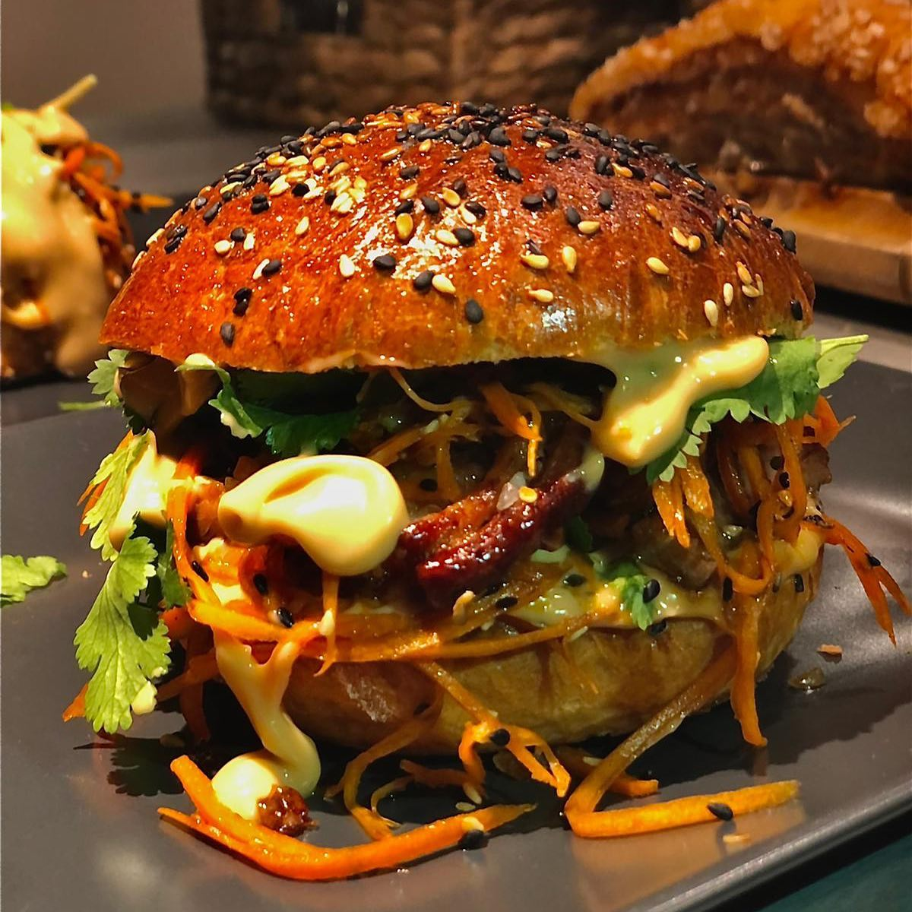

Mrkvový šalát podľa @nikca.v.kuchyni — Normy Jedál
ASIJSKÝ BURGER S KŘUPAVÝM BŮČKEM A HOISIN MAJONÉZOU 🍔🥕🥩
...neprekonatelna exploze chuti... 🤤😍
recept je z Nejbarevnejsi kucharky od @chefkamu
(domaci bramborove bulky, upeceny krupavy bucek v soli, nakladana mrkev v sezamu, koriandr a majoneza s hoisin omackou)
#burger#asianburger#bůček#krupavybucek#hrubozrnasul#mrkev#nakladanamrkev#mrkvovysalat#sezam#bilysezam#cernysezam#koriandr#majonéza#hoisinsauce#hoisinmajoneza#burgerbulky#bramborovebulky#cerstvykoriandr#kamu#chefkamu#asijskakuchyne#asijskejidlo#asianfood#burgerfood#milujuvaření